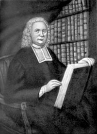

|
by Stefan Bielinski Henry Barclay was born in Albany in 1712. He was the oldest of the four sons of St. Peters founder Thomas Barclay and Anna Dorothea Drayer. Henry grew up following his father on a ministry that included missions into the Indian country as well as service to the settler populations of Albany and its hinterland. As his father's health deteoriated during Henry's adolescence, Henry began to feel a call to the ministry himself. Following the death of Thomas Barclay in 1726, Henry was sent to Yale University. He graduated in 1734 but continued his studies at the graduate level. By the mid-1730s he was serving as a catechist among the Mohawks at Fort Hunter. He was ordained in England in January 1738 and returned home to become rector of St. Peters that same year. Like his father, Henry Barclay's tenure at St. Peters cast him in the dual roles of missionary and rector. The diversity of his flock required him to preach in English, Dutch, and Mohawk. He was particularly interested in converting and catechizing Native peoples and was instrumental in having the book of common prayer translated into the Mohawk language. He was most zealous in campaigning against drunkeness among the Indians and was recognized for his efforts in that area. In 1740, he was able to purchase land from the Mohawks at Canajoharie to be used as a glebe. After Barclay removed to New York, the Mohawks wanted it back creating a controversy that tested the diplomatic skills of Sir William Johnson. After a decade of service in Albany and on the frontier, in 1746, Henry Barclay was named rector of Trinity Church in New York City. With that appointment, he had reached the pinnacle of Anglican success in America. In 1749, he married Mary Rutgers and settled in New York. Ever the student, in 1760, Oxford University granted him the doctor of divinity degree. Reverend Barclay made his will in June 1764 - leaving his estate to his wife and children. He died in August and was buried in the Trinity churchyard.
Barclay received a masters degree from Yale in 1740. Portrait of unknown origin printed in Hooper - facing page 76, which noted it belonged to Trinity Episcopal Church. The dispute over title to the Mohawk tract is chronicled in NYCD and the Johnson Papers. For Barclay's Trinity tenure, see Morgan Dix, A History of . . . Trinity Church (New York, 1898). Signature of Henry Barclay
as printed in the Johnson Papers.
|